Tamanho da fonte
Aplicar grafos conforme especificações técnicas do projeto.
Vamos iniciar os estudos!
PlayComo os grafos são usados em jogos digitais?
Os grafos são uma das estruturas de dados mais fundamentais e versáteis em ciência da computação e matemática. Eles são usados para representar relações entre pares de objetos e são compostos por vértices (também conhecidos como nós) e arestas (também conhecidas como links ou arcos). Cada aresta conecta dois vértices, indicando uma relação entre eles.
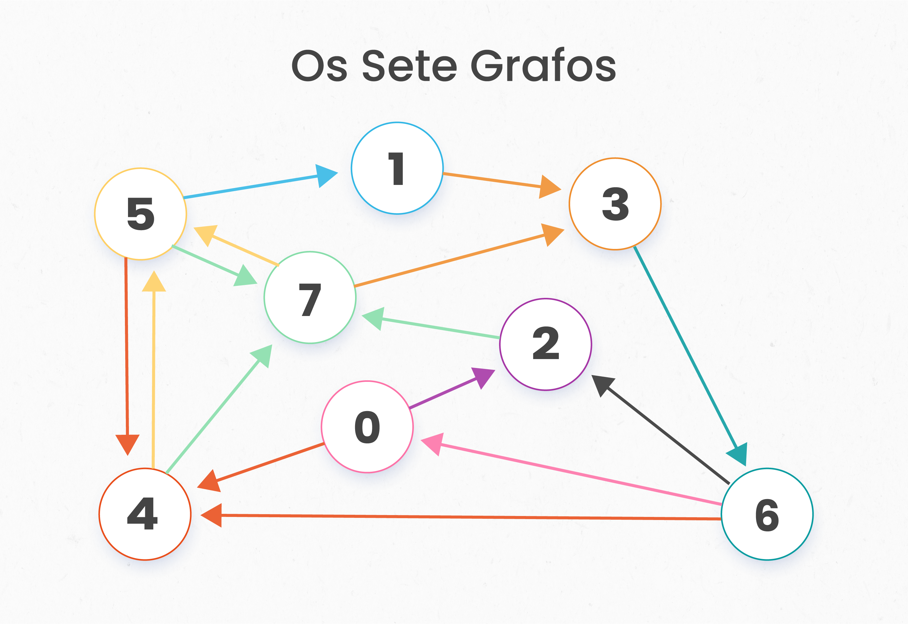Os grafos podem ser categorizados em dois tipos principais: grafos direcionados e não direcionados. Em um grafo direcionado, as arestas têm uma direção associada a elas. Isso significa que se existe uma aresta de um vértice A para um vértice B, a relação é considerada unidirecional de A para B. Por outro lado, em um grafo não direcionado, as arestas não têm direção, indicando que a relação é bidirecional.
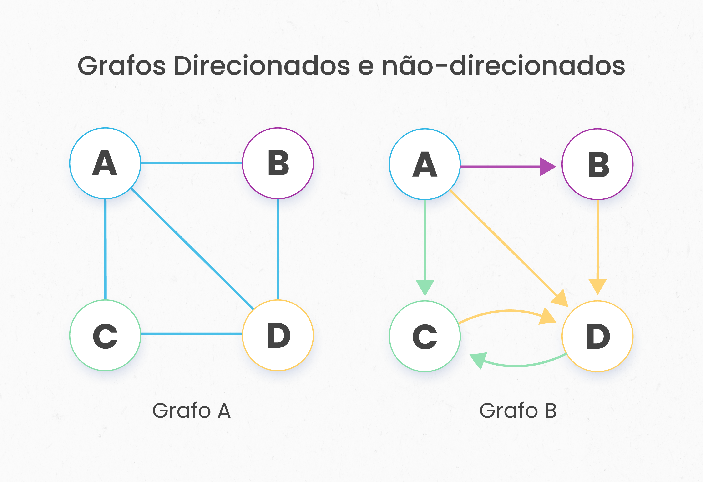Os grafos são usados em uma variedade de aplicações em várias disciplinas. Em ciência da computação, eles são usados para representar redes de comunicação, dados organizados, fluxo de computação, entre outros. Em matemática, os grafos são usados para estudar e modelar relações e processos. Já nos jogos digitais, os grafos são usados para representar mapas de níveis, caminhos de IA, redes de diálogo, sistemas de missão e muito mais.

A história do uso de grafos remonta ao século XVIII, quando o matemático suíço Leonhard Euler usou um grafo para resolver o famoso problema das Pontes de Königsberg. O problema perguntava se era possível percorrer a cidade de Königsberg, visitando cada uma de suas sete pontes uma vez e apenas uma vez. Euler representou a cidade como um grafo, com os vértices representando as terras e as arestas representando as pontes. Ao resolver o problema, Euler lançou as bases para a teoria dos grafos.

O Problema das Pontes de Königsberg: Um dos problemas mais famosos da teoria dos grafos é o problema das Pontes de Königsberg, que perguntava se era possível passear pela cidade de Königsberg, na Prússia (hoje Kaliningrado, Rússia), atravessando cada uma das sete pontes da cidade exatamente uma vez. Esse problema, que foi provado ser impossível por Leonhard Euler em 1736, é considerado um dos primeiros teoremas na teoria dos grafos.
Um grafo é composto por vértices (ou nós) e arestas (ou links). Cada aresta conecta dois vértices. Em um grafo direcionado, cada aresta tem uma direção, enquanto em um grafo não direcionado, as arestas não têm direção.
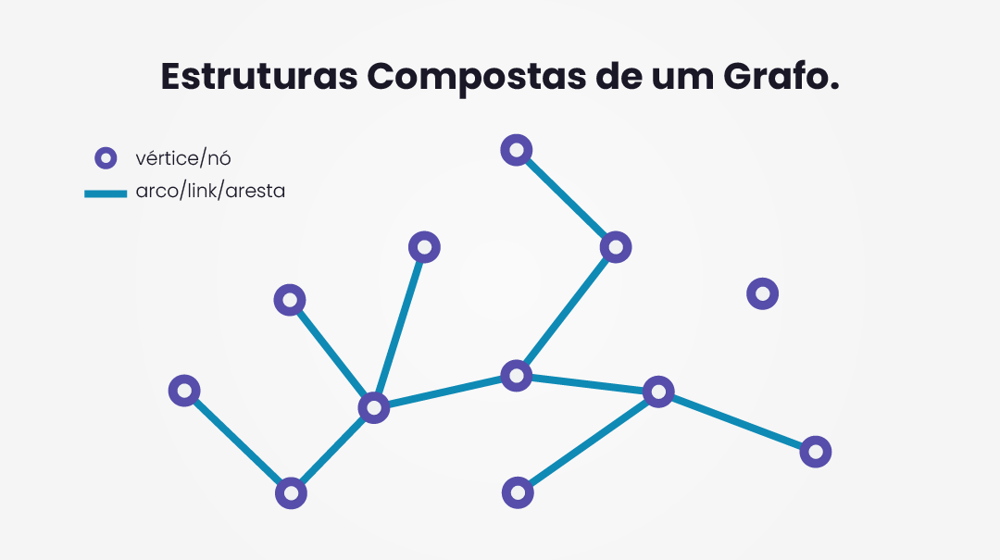QUESTÃO 1
Avalie se a afirmação a seguir é verdadeira ou falsa.
Um grafo é composto por vértices (ou nós) e arestas (ou links).
São estruturas de dados que representam conexões entre elementos do jogo. Essas conexões podem ser usadas para modelar várias interações e relações, como movimentação entre áreas, relacionamentos entre personagens, hierarquia de itens ou missões, entre outros aspectos do jogo.
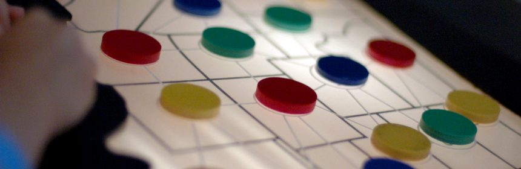Um grafo é composto por nós (também chamados de vértices) e arestas (também chamadas de arcos). Cada nó representa um elemento específico do jogo, como uma sala, um personagem, um objeto ou um evento, e as arestas representam as conexões entre esses elementos.
No jogo Binding of Isaac, no qual o jogador navega entre salas onde estão as interações do jogo, que podem ser uma loja, uma sala de recompensas, um boss em cada andar, uma sala secreta, etc. Cada sala dessas, pode ser entendida como um nó do grafo.
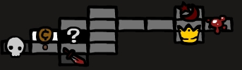Como você pode ver, em jogos digitais, os grafos são usados para representar várias estruturas e sistemas, como mapas de níveis, caminhos de IA, redes de diálogo, sistemas de missão e muito mais.
Um exemplo clássico de uso de grafos em jogos é o algoritmo A* para encontrar o caminho mais curto em um mapa. Outro exemplo é a representação de redes de diálogo em jogos de RPG.
Em jogos, geralmente se quer encontrar o melhor caminho para se atingir um objetivo. Não é uma questão apenas de achar o caminho mais curto, outras coisas também devem ser pesadas, o tempo de viagem, os obstáculos, etc.
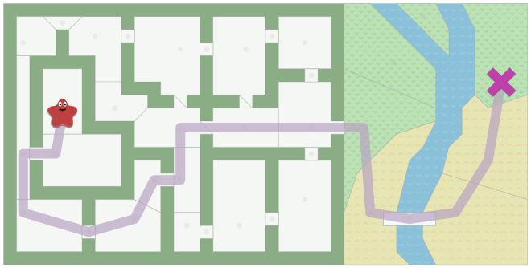Para encontrar esse caminho podemos usar um algoritmo de busca de grafos , que funciona quando o mapa é representado como um grafo. O algoritmo A* (A-estrela) é um algoritmo de busca informada amplamente utilizado para encontrar o caminho mais curto entre um ponto inicial e um ponto final em um espaço de busca. Outro algoritmo bastante utilizado para encontrar o caminho mais curto entre vértices é o algoritmo de Dijkstra (E.W. Dijkstra).
No gif abaixo, podemos ver a aplicação do Algoritmo A* aplicado para localizar caminhos em um labirinto gerado aleatoriamente.

No vídeo a seguir, é apresentado como se tem usado o algoritmo A* para encontrar o caminho entre dois pontos de um gráfico. Note a utilização de uma heurística que escolhe pontos mais próximos preferencialmente.
Existem várias ferramentas disponíveis para trabalhar com grafos, cada uma com suas próprias vantagens e usos específicos. Aqui estão algumas das mais comuns, ao final desta seção, veremos uma demonstração de como aplicar grafos para projetar comportamentos dos elementos dos jogos.
NetworkX: Esta é uma biblioteca Python que permite a criação, manipulação e estudo da estrutura, dinâmica e funções de redes complexas.

Gephi: É uma ferramenta de visualização e exploração de redes interativas. Gephi permite aos usuários criar grafos e visualizá-los de maneiras úteis e interativas.
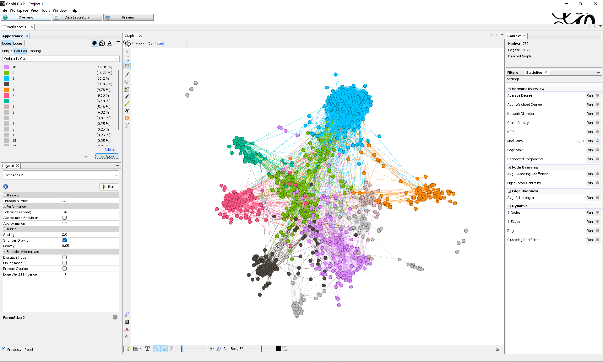Graphviz: Esta é uma ferramenta de software de código aberto para a visualização de grafos. Ela permite que os usuários criem gráficos usando uma linguagem de descrição de gráficos e fornece várias maneiras de representar grafos visualmente.
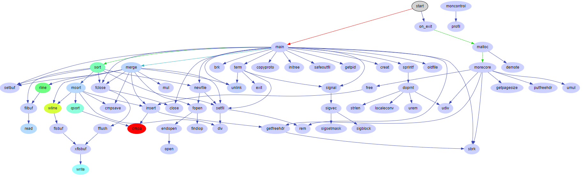Neo4j: É um sistema de gerenciamento de banco de dados gráfico de código aberto, altamente considerado por sua escalabilidade e robustez. É uma ótima ferramenta para armazenar e consultar dados de grafos em grande escala.
Graphonline: É uma ferramenta open source e free disponível na url graphonline.ru. Nela é possível traçar grafos e testar os algoritmos.
No vídeo abaixo, veremos como criar grafos com o auxílio de uma ferramenta gráfica. A partir desse conhecimento, é possível aplicar o conhecimento de grafos para projetar comportamentos dentro dos nossos jogos, desde a movimentação dos NPCs, até para planejar o level design de nossas fases.
No game design, Os grafos são usados de diversas formas, muitas das quais são fundamentais para a criação de experiências de jogo ricas e imersivas. Aqui estão algumas das maneiras pelas quais os grafos podem ser usados no design de jogos:
Pathfinding: Talvez o uso mais comum de grafos no design de jogos seja para o pathfinding, que é o processo de encontrar o caminho mais eficiente entre dois pontos. É possível então usar algoritmos como A* ou Dijkstra para encontrar o caminho mais eficiente.
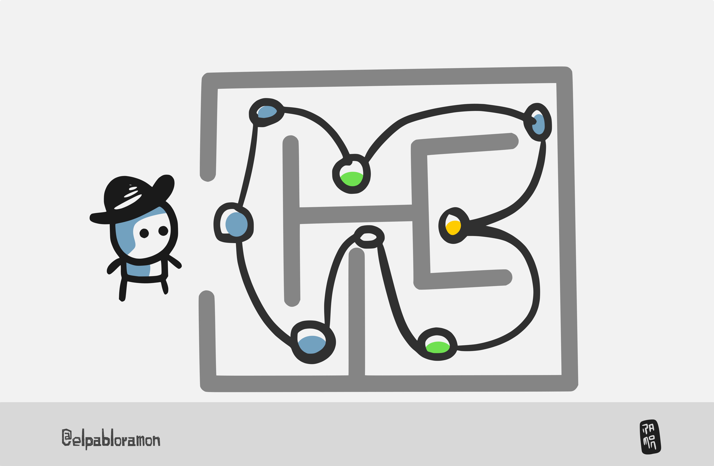Desta forma, os grafos podem ser usados no design de jogos para representar e resolver problemas complexos, como a criação de mapas procedurais, a geração de missões e a modelagem de interações entre personagens.
Design de Níveis: Os grafos também podem ser usados no design de níveis, especialmente em jogos que usam geração de níveis procedural (como visto na imagem).
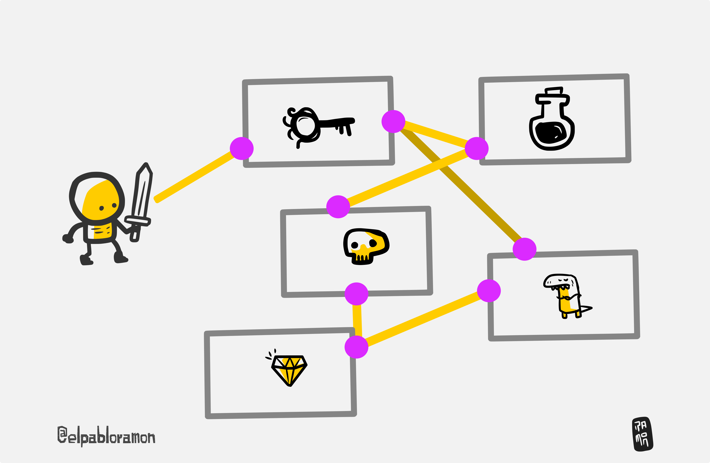Estes são apenas alguns exemplos de como os grafos podem ser usados no design de jogos. A natureza flexível dos grafos como uma estrutura de dados os torna uma ferramenta útil para muitos aspectos diferentes do design de jogos.
QUESTÃO 2
Avalie se a afirmação a seguir é verdadeira ou falsa.
Grafos são usados em jogos digitais para representar mapas de níveis, caminhos de IA, redes de diálogo, sistemas de missão e muito mais.
Os grafos são uma maneira eficaz de representar o espaço em um jogo. Cada nó do grafo pode representar um ponto no espaço do jogo - seja uma sala em um edifício, um ponto em uma estrada, ou uma localização em um mapa de mundo aberto. As arestas entre os nós, então, representam os caminhos possíveis que um personagem pode seguir de um ponto a outro. Esta representação gráfica do espaço do jogo é a base para muitas das técnicas de navegação e pathfinding usadas nos jogos modernos.
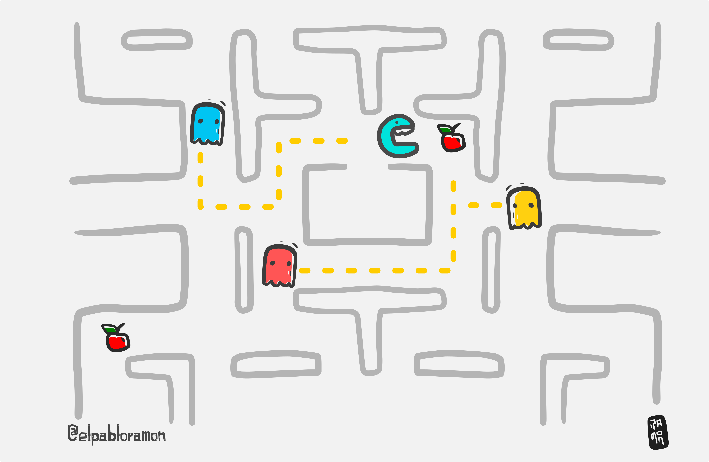QUESTÃO 3
Qual é a função dos nós em um grafo usado para representar o espaço em um jogo?
Um grafo não direcional, ou não orientado, é um tipo de grafo onde as arestas não têm uma direção definida. Isso significa que se existe uma aresta entre dois nós A e B, então é possível viajar de A para B e de B para A. Em termos de jogos, isso poderia representar um mapa onde o jogador pode se mover livremente entre as localizações.
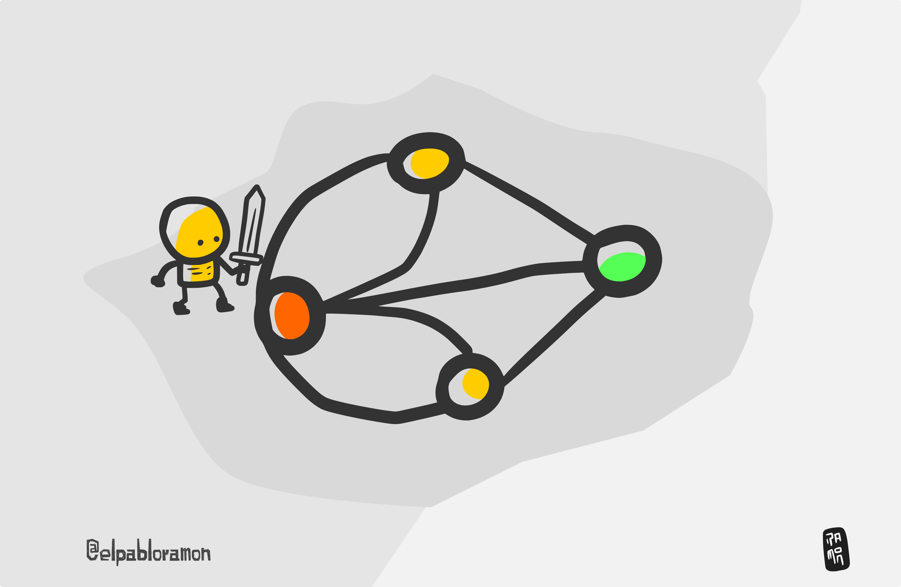Um grafo direcional, ou orientado, por outro lado, é um grafo onde as arestas têm uma direção definida. Em um grafo direcional, se existe uma aresta do nó A para o nó B, então é possível viajar de A para B, mas não necessariamente de B para A. Nos jogos, isso pode representar, por exemplo, uma situação em que o jogador pode pular de um penhasco (de A para B), mas não pode escalar de volta pelo penhasco (de B para A).
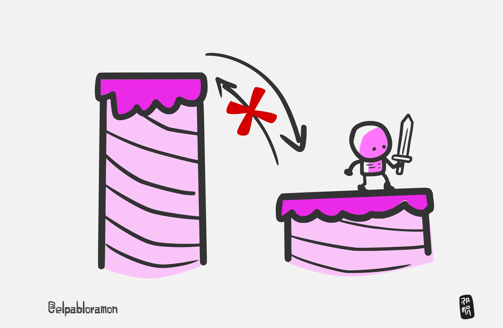QUESTÃO 4
Avalie se a afirmação a seguir é verdadeira ou falsa.
Em um grafo direcionado, as arestas não têm direção.
A busca em profundidade é um algoritmo que pode ser usado para navegar por um grafo. Começa em um nó raiz e explora tão profundamente quanto possível ao longo de cada ramo antes de retroceder. Em jogos, isso pode ser usado para buscar caminhos ou resolver quebra-cabeças onde você precisa explorar completamente um caminho antes de seguir para o próximo.
A busca em largura é outro algoritmo usado para navegar em um grafo. Ele começa em um nó raiz e explora todos os nós vizinhos nesse nível antes de se mover para o próximo nível. Em jogos, a busca em largura pode ser usada para encontrar o caminho mais curto entre dois pontos, ou para modelar comportamentos de AI, como a propagação de um alarme entre guardas.
A busca em largura e o algoritmo A* são ambos métodos utilizados para navegar e buscar caminhos em grafos, mas eles operam com diferentes abordagens e têm aplicações distintas. Enquanto a busca em largura explora todos os nós em um determinado nível antes de avançar para o próximo, garantindo que o caminho mais curto em termos de número de passos seja encontrado, o algoritmo A* utiliza uma abordagem informada, empregando uma função heurística para estimar o custo do caminho mais promissor até o destino. Isso permite que o A* seja mais eficiente em muitos cenários, especialmente em espaços de busca grandes, pois ele pode direcionar sua busca para caminhos que parecem mais promissores, em vez de explorar todos os caminhos possíveis. Em jogos, enquanto a busca em largura pode ser usada para modelar comportamentos simples, como a propagação de um alarme, o algoritmo A* é frequentemente escolhido para encontrar o caminho mais curto em mapas complexos, devido à sua eficiência e capacidade de encontrar caminhos ótimos em grafos ponderados.
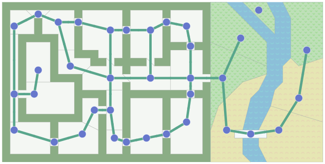Em jogos, é interessante notar que a abordagem de grafos para pathfinding foi popularizada por jogos como o Starcraft original, onde o pathfinding preciso era essencial para a jogabilidade. Até hoje, algoritmos como A* (baseados em grafos) são padrões da indústria para pathfinding em jogos.
Agora, para melhor compreensão do conteúdo, responda a questão a seguir:
QUESTÃO 5
Avalie se a afirmação a seguir é verdadeira ou falsa.
Em um grafo direcionado, as arestas não têm direção.
Hoje, mergulhamos no fascinante mundo dos grafos e exploramos como eles são usados em jogos digitais. Aprendemos que os grafos são estruturas matemáticas compostas por vértices (ou nós) e arestas (ou links), e que eles são uma ferramenta poderosa para representar e manipular estruturas complexas. Vimos como os grafos podem ser usados para representar mapas de níveis, caminhos de IA, redes de diálogo, sistemas de missão e muito mais em jogos digitais.